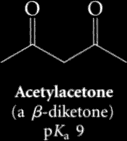
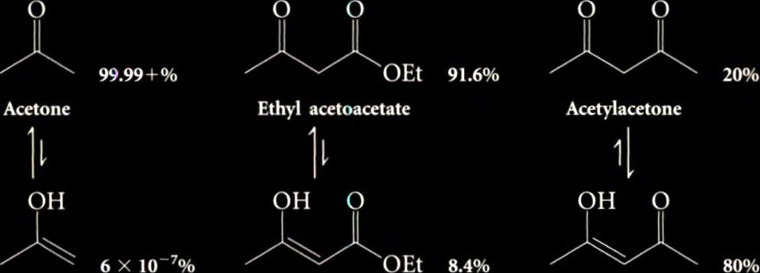

Enolate Anions
The carbon atom immediately adjacent to a carbonyl group is referred to as the α-carbon, and hydrogen atoms bonded to the α-carbon are referred to as α-hydrogens. The a position of carbonyl-containing compounds such as aldehydes, ketones, and esters is relatively acidic, having pKa values in the 16–20 range. This relative acidity for a carbon-bound H atom is largely due to the stability of the resonance-stabilized anion, called an enolate anion, which is produced upon deprotonation. These anions are substantially more stable than simple carbanions, and this increased stability is reflected in the acidity of the caronyl compounds themselves. The range of pKa values, is similar to the range exhibited by alcohols (ethanol has a pKa of 16 and tert-butanol has a pKa of 18). As a result, when an alkoxide ion is used as the base, an equilibrium is established in which the alkoxide ion and the enolate ion are both present. The relative amount of alkoxide and enolate ions is determined by the relative pKa values, altough there will usually be less of the enolate present at equilibrium.
In this example, ethoxide is used as a base to deprotonate a ketone (acetone). The equilibrium strongly favors the ketone, rather than its enolate, although both are present. Another example is the following

This anion is best represented as a hybrid of two contributing structures. Of these, the structure with the negative charge on the more electronegative oxygen atom makes the greater contribution to the hybrid. Note that although the majority of the negative charge is on the carbonyl oxygen, there is still a significant partial negative charge on the alpha carbon.
One contributing structure places the negative charge on the α-carbon atom and contains a carbonyl π bond. The other contributing structure places the negative charge on the oxygen atom and contains a C=C π bond. The contributing structure with the negative charge on the O atom is the major contributor to the hybrid because O is more electronegative than C, so O is better able to accommodate the negative charge.

|  |  |  |
In contrast, many other bases, such as sodium hydride, can irrevesibly and completely convert the ketone into an enolate.
When sodium hydride is used as the base, hydrogen gas is formed. It bubble out of solution, as all of the ketone molecules are converted into enolate ions. Under these conditions, the ketone and the enolate are not both present. Only the enolate is present. Another base commonly used for irreversible enolate formation is lithium diisopropylamide (LDA), which prepared by treating diisopropylamine with butyllithium.
The pKa of diisopropylamine is approximately 36, and therofore, LDA can be used to accomplish irreversible enolate formation.
If the α-hydrogens can conjugate with two carbonyl groups, they become much more acidic and hydroxide can easily remove one to give the enolate ion. Such compounds, which have two carbonyl groups separated by one carbon atom (carbonyl groups are 1,3 to each other), are known as β-dicarbonyl compounds.
Malonate esters, β-ketoesters, and β-diketones that have hydrogens on the carbon between the carbonyl groups are quite acidic, and can be converted essentially completely to enolate anions with bases as mild as hydroxide ion. The central hydrogen of Acetylacetone with a pKa of 9 is considerably more acidic than the terminal hydrogen of the methyl group, e.g. in propanone, that have a pKa of around 20.
Both β-ketoesters and β-diketones have an unsually high content of their enol tautomers in equilibrium. For example, at equilibrium, the enol of acetone constitutes only about 1ppm (part per million), but both ethyl acetoacetone and acetylacetone have signifinact percentages of the eno. Indeed, in the latter case, the enol dominates the equilibrium.
The Use of Enolate Anions to form New C-C Bonds
Enolate anions are important synthetic reagents because they react at carbon to create new carbon-carbon bonds in two types of reactions. First, they can function as nucleophiles in SN2 reactions, as shown in this general reaction.
Second, they function as nucleophiles in carbonyl addition reactions. Here, we show nucleophilic acyl addition of an enolate anion to the carbonyl carbon of an aldehyde.
Enolate anions also add in this manner to the carbonyl groups of ketones and esters.
As shown by the charge distribution on the electrostatic potential map, the majority of negative charge of an enolate anion is on the carbonyl oxygen. If reaction were to occur at the carbonyl oxygen, the product would be a vinyl ether, whereas reaction at the α-carbon leads to alkylation.
Despite this charge distribution, enolate anions react primarily at carbon for two reasons. First, there is always a counterion such as the Li+ or Na+ ion associated with the enolate anion. These counterions are more tightly associated with the oxygen atom than the alpha carbon. As a result, the counterion to some degree blocks the approaching electrophile, thus reducing the likelihood of a productive collision with the oxygen. In fact, enolates are thought to exist in solution as large aggregates containing several counterions associated with several enolate oxygen atoms and the solvent, effectively amplifying this effect.
The second reason enolates react at carbon is based on product thermodynamics. We have already seen that, other factors being equal, reactions at equilibrium will favor products with stronger bonds. If an enolate anion were to react at the alpha carbon, the product would contain a C=O π bond. If it were to react at the carbonyl oxygen, the product would contain a C=C π bond. In general, C=O bonds are stronger than C=C bonds. Thus, enolate anions react primarily at the alpha carbon to form new carbon-carbon bonds.